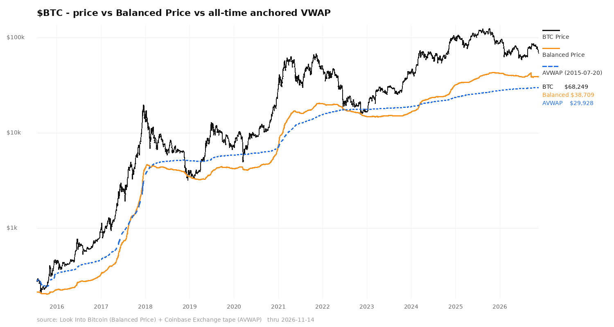
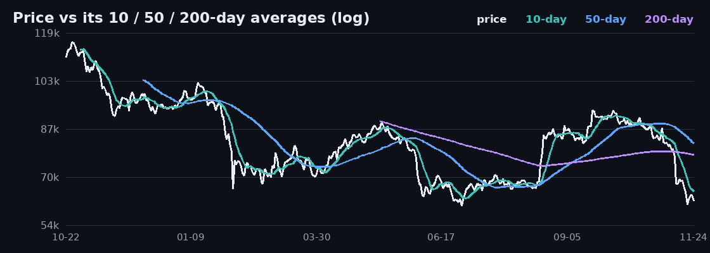
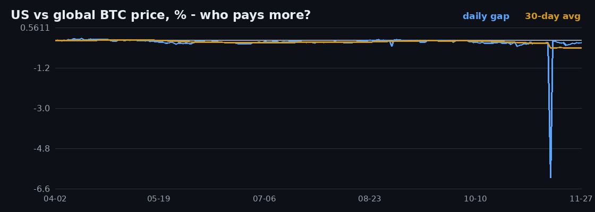
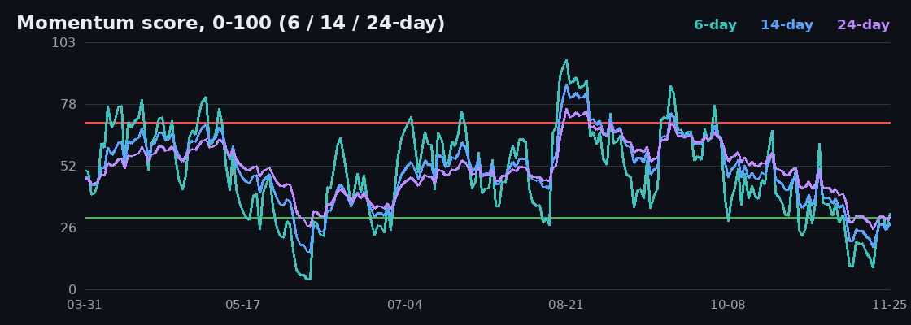
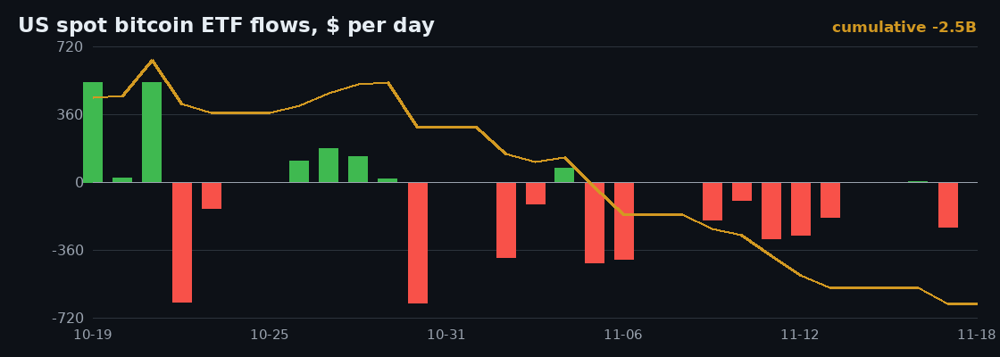
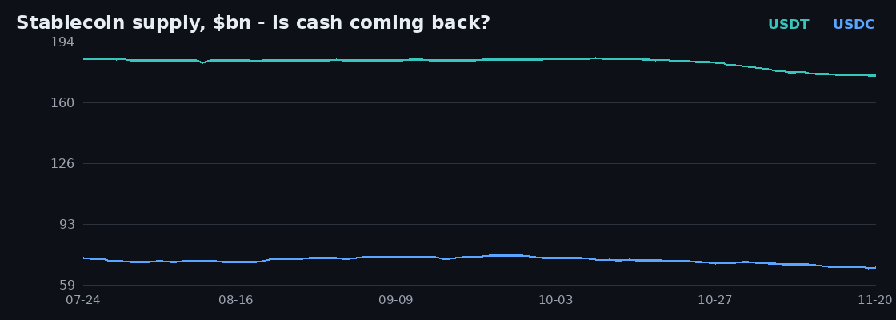
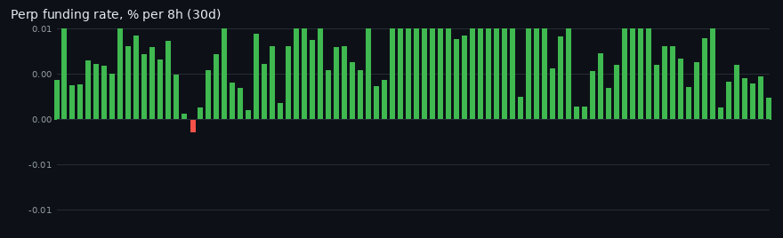
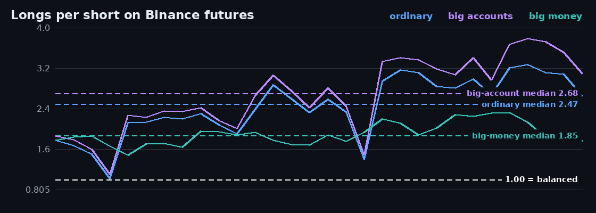
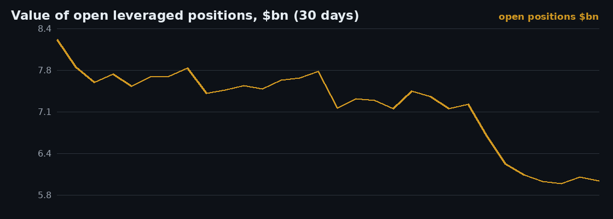
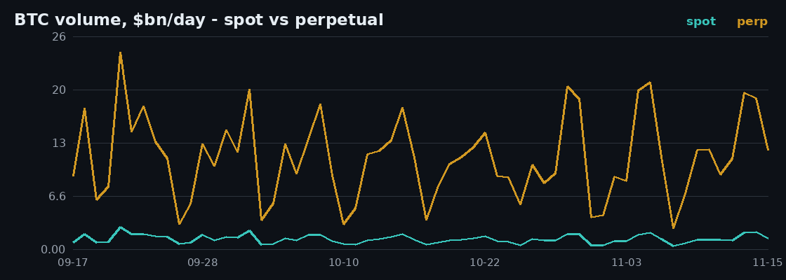

Sections run in order of importance: flow first (where the money is going), then positioning & sentiment, price structure, momentum, and finally the actionable signals. If the flow section is bearish, everything below it is a bounce to sell. All blocks are settled daily closes unless a line says “live”.
ETF net flows, Coinbase premium, stablecoins, venue taker flow.
Read this first. If flow is bearish, everything below is a bounce to sell.
latest 2026-11-15 +$0.0M prev +$0.0M
5d -$769.5M 10d -$1,477.5M 30d -$2,327.7M
-> ETF money still leaving: -$2,327.7M over 30d. live -0.057% last close -0.049% (prev -0.113%)
30d avg -0.142% negative streak 71d 1y low -0.271%
-> US still discounting to global for 71 straight days: US bid is the missing buyer. -0.014% (prev -0.015%) 1y percentile 3% streak 29d
-> Discount is a multi-week regime, not a one-day blip. USDT $175.4B 1d +$0.10B 7d -$1.42B 30d -$8.11B
USDC $69.3B 1d +$0.07B 7d -$1.37B 30d -$3.55B
USDT+USDC combined $244.6B 7d -$2.80B 30d -$11.66B
-> Stablecoin supply contracting on both windows: capital is leaving crypto, not waiting in it. Binance 1d -73m 7d -126m (-1.2% of vol) 30d +503m
OKX 48h -10m (-0.4% of vol) (OKX publishes 48h only)
Coinbase live -0.2 BTC (last 1000 trades = minutes; CONTEXT ONLY)
Bybit n/a (publishes no taker split)
-> both venues roughly BALANCED (<3% of volume): no directional spot pressure.
Binance PERP CVD 5d -2,711 BTC | 30d +7,398 BTC[9] long/short crowding, [10] funding & basis (what leverage costs), [11] Fear & Greed.
Contrarian throughout: crowded longs = squeeze fuel DOWN; crowd panic = bounce fuel UP.
all-acct L/S 3.08 (30d 1.02-3.23, pctile 87%) | top acct 3.68 (pctile 97%) | top pos 1.81 (pctile 43%)
taker buy/sell 0.92 (prev 0.90) | OI $6.28bn (1d -0.44, 30d 6.28-8.24)
-> crowd crowded LONG (all-acct pctile 87): squeeze fuel DOWN, bearish confirm; top traders CUTTING longs (2.11->1.81); OI draining = deleveraging/liquidation, not new shorts. funding now +0.0006% /8h -> +0.6% annualised
30d avg +0.0069% /8h -> +7.6% annualised (positive in 99% of periods)
perp basis -0.057% (mark 65,156 vs index 65,193)
perp 24h vol $23.4bn last 24h -1.93%
-> longs pay shorts: leveraged longs still the crowded side, dips get flushed (bearish tilt). now 10 (Extreme Fear) yesterday 13 30d range 10-68
30d avg 40 (current = 3rd percentile of the 30d window)
-> EXTREME FEAR (pctile 3): crowd capitulating - contrarian-bullish for a BOUNCE, which is a warning against shorting into it, not a buy signal.Cost-basis clusters and valuation floors. Levels to lean on, not timing triggers.
(RuntimeError)
Balanced Price $38,709 (2026-11-14) -> spot 1.68x
AVWAP since 2015-07-20 $29,928 (thru 2026-11-14) -> spot 2.18x
-> Price is 1.7x the Balanced floor and 2.2x the all-time VWAP. Prior cycle bottoms converged to ~1.0x Balanced, so a full retest means roughly $38,709.[7] RSI reads force; [7b] divergence reads exhaustion. They describe, they do not trigger.
Divergence guide (what the four types mean, and the invalidators) is on the page.
RSI(6) 9.2 | RSI(14) 20.0 | RSI(24) 28.0 (RSI14 1y percentile 2%)
same maths incl today's forming candle (live $65,157): RSI(6) 17.7 | RSI(14) 23.9 <- drifts until the close
-> oversold <30: capitulation zone, historically where bounces start; fast < slow = momentum deteriorating, bounces are being sold into. none - last 20d lows: 2026-11-05 75,969/RSI 38.6 -> 2026-11-10 73,698/RSI 34.2
watch (bullish): a NEW 20d CLOSE below 64,119 (last one today) - but only AFTER a bounce. The chart's wick low is 63,270, but this trigger is CLOSE-basis - a wick down and back up does not count. A straight-down close lowers RSI14 too (would print ~19.6 vs 20.0 = no divergence), so it takes a RALLY THAT FAILS, not just a drop.Only the actionable lines. One positive-EV setup exists: fade the bounce at MA200.
MA200 72,973 | MA50 80,138 | MA10 72,882 -> spot 65,157 is -10.7% vs MA200
NOT ARMED - RSI14 20.0, needs to cross 40 (+20 pts). MA200 72,973 is +12.0% from spot
oversold now - the setup is a bounce that carries RSI14 to 40 near MA200, then rolls over. Fading at 65K is early: only 34% reach 70K firstLEGEND [1] Premium: US vs global bid (+ = US leads, - = US is the missing bid; 20d+ streak = regime)
[2] ETF flow: institutional demand (read the 5d/30d sums, never one day)
[3] 30d mean net of Tether: is the US discount a regime or just noise?
[4] URPD: supply by cost basis (bars above spot = resistance, at/below = support)
[5] Floors: 1.0x Balanced = where past cycle bottoms landed; AVWAP = market break-even
[6] Stables: money in/out of crypto (7d AND 30d up = capital returning)
[7] RSI (daily): momentum 0-100 (>70 overbought, <30 oversold; fast>slow = uptrend intact)
[7b] Divergence: 20d low + HIGHER RSI14 (lows >=5d apart). 9y test: plain BULLISH has NO
edge (55% vs 53% baseline); BULLISH with RSI14<35 at the 2nd low = 67% win vs 53%.
BEARISH showed no edge. Act ONLY on the oversold variant; ~5% dip first is normal.
[8] Short-fade: RSI14 crosses above 40 while below MA200 = fade the bounce at resistance.
9y: 64% touch -3% before +5%, but EV ~+0.12% - near break-even. Small size, exit fast.
[9] Positioning: Binance futures L/S ratios - CONTRARIAN. High ratio = crowd long =
squeeze fuel DOWN; low = crowd short = squeeze fuel UP. Top-trader pos falling =
smart money exiting longs. OI draining = liquidation, not new shorts. Mid-range = no signal.
[10] Funding/basis: cost of leverage. Positive/longs-pay = crowded longs (bearish tilt);
negative/shorts-pay = crowded shorts (squeeze fuel UP). Basis = perp premium to index.
[11] Fear & Greed: crowd panic/greed 0-100. <20 = capitulation (bounce fuel UP, bad to short);
>80 = euphoria (contrarian-bearish). Shows where the crowd sits, not where price goes.
[+] Venue flow: net spot taker buying per exchange. Only Binance+OKX publish history;
Coinbase is a live snapshot (context only) and Bybit has none. Verdict uses the deep books.Every indicator the digest tracks, charted. Hover-free, static PNGs — they render anywhere.

How to use it: Balanced Price is where past cycle BOTTOMS converged (about 1.0x). The AVWAP is the market's all-time break-even. The further spot sits above these, the more downside exists before deep support is reached. These are floors, not timing triggers - price can stay far above them for a long time.
→ Spot is 1.68x the Balanced floor and 2.18x the all-time VWAP. A full retest of the floor would be roughly $38,709.

How to use it: A bounce in a downtrend stalls at the FIRST moving average above it. MA200 is the line the short-fade in block [8] waits for. Price above an MA = that MA is support; below = it is resistance.
→ Spot is below all three MAs (none above), so every rally runs into overhead supply. MA200 is 10.7% away.

How to use it: Above the zero line = US buyers paying more than global = US demand leading. A run of 20+ days below zero is a REGIME, not noise - it means the deepest pool of buyers is simply absent.
→ US bid missing for 71 straight days - the structural buyer is not there.

How to use it: Red 70 / green 30. Fast line above slow = momentum improving; fast BELOW slow = momentum deteriorating and bounces are being sold. This describes force - it does not trigger a trade on its own.
→ RSI14 20.0 is oversold - capitulation zone, where bounces historically start. Fast < slow: momentum still deteriorating.

How to use it: Green bars = creations (money in), red = redemptions (money out). Read the SUMS, never a single day - one day is noise, the 30d line is the trend. The amber line is cumulative.
→ Money still leaving: $-2,245m over 30 days.

How to use it: Stablecoins are the dry powder of crypto. Expanding supply = fresh fiat entering the system. Contracting = capital leaving crypto entirely - it is NOT money sitting on the sidelines waiting.
→ Contracting on both windows (-11.66bn over 30d) - capital is exiting, not waiting.

How to use it: Funding is the 8-hourly payment between longs and shorts. Positive = LONGS pay shorts = leveraged longs are the crowded side (bearish tilt, dips get flushed). Negative = shorts pay, meaning crowded shorts and squeeze fuel UP - hostile to a short.
→ Longs still paying - leveraged longs have NOT capitulated, so dips get flushed.

How to use it: Above 1 = more longs than shorts. Read it CONTRARIAN: a crowded long book is squeeze fuel DOWN; a crowded short book is squeeze fuel UP. When retail is long but top-trader POSITIONS are falling, smart money is exiting into retail strength. Mid-range percentile = no signal.
→ Crowd is crowded LONG (87th pctile) - squeeze fuel down. Top-trader positions at 1.81, so smart money is not adding.

How to use it: Total value of open perp positions. RISING = fresh positions entering (trend fuel). FALLING = positions closing, usually forced liquidation - that is deleveraging, not new shorts, and it often marks a local bounce.
→ OI draining (-0.44bn) - deleveraging/liquidation, not fresh shorts.

How to use it: Spot volume is real buying and selling. Perp volume is leveraged bets on price. When perp dwarfs spot, price is being moved by leverage rather than by people taking delivery - moves are faster and less durable.
→ Perp is 8.9x spot - leverage-dominated tape, expect fragile moves and liquidation wicks.
What each block is for, and how to read it.
Live and closing spread between Coinbase (US) and Binance (global) BTC price. Positive = US buyers paying up; negative = the US is the missing bid. A negative run of 20+ days is a regime, not noise.
Aggregate creations minus redemptions across US spot BTC ETFs. Always read the 5d/30d sums, never a single day.
The 30-day mean premium with the USDT/USD rate stripped out, so a stablecoin peg wobble can't fake a signal. Answers: is the US discount structural or transient?
Supply by acquisition-price bucket ($2,000 wide). Bars above spot are overhead resistance; at or below spot is support. Includes the short-term-holder split: how much STH supply is underwater.
Balanced Price (realized price − transferred price) is where past cycle bottoms have converged (~1.0x). AVWAP since 2015 is the market's all-time break-even. Floors, not timing triggers.
Combined USDT + USDC supply. Expansion = capital arriving into crypto; contraction = capital leaving (not “waiting”). Needs both 7d and 30d up to call a return.
Wilder RSI on daily closes only, printed two ways so they never have to be reconciled: settled (completed days, stable, what to reason with) and incl. today's forming candle (what a live chart shows, drifts all day).
RSI(6) > RSI(14) > RSI(24) = short-term momentum leading. RSI(6) < RSI(24) = deteriorating, bounces being sold into. Never quote an RSI without its timeframe — the same market reads 62 on 1H and 9 on 1D.
Bullish = a distinct 20-day price low whose RSI14 is higher than at the previous 20-day low. Measured on closes, from the trigger day, no look-ahead. Plain divergence has no edge (55% vs 53% baseline); only the variant where RSI14 < 35 at the second low tested positive (67%, n=12).
A straight-down close can never produce this — a lower close is a loss day, so RSI falls with price. The RSI must be rebuilt by a bounce that then fails.
Short trigger: RSI14 crosses above 40 while price is below MA200 — a bounce that recovered momentum but is still under the trend line. Prints MA200/MA50/MA10 and the exact gap. Take profit fast: EV is only ~+0.12%, near break-even.
Three Binance futures ratios, all contrarian:
| indicator | what it counts |
|---|---|
| all-accounts L/S | every account, longs ÷ shorts |
| top-trader accounts | large accounts, longs ÷ shorts |
| top-trader positions | large accounts, by size not headcount |
High ratio = crowd is long = squeeze fuel DOWN. Low = crowd short = squeeze fuel UP. Retail crowded long while top-trader positions fall → smart money exiting into retail strength (bearish). OI falling = deleveraging, not new shorts. A mid-range percentile is no signal.
The 8-hourly payment between longs and shorts, plus the perp's premium to spot index. Positive funding = longs pay shorts = leveraged longs are the crowded side (bearish tilt — dips get flushed). Negative funding = shorts pay, meaning crowded shorts and squeeze fuel up, which is hostile to a short. Basis near zero means perp and spot agree.
0–100 composite of volatility, momentum, volume, social and dominance. Crowd-state, not price-state: it says where people are, not where price goes. Below 20 = capitulation — contrarian-bullish for a bounce, which is a warning against shorting into it. Above 80 = euphoria, contrarian-bearish.
Net aggressive buying (taker buy − taker sell) per exchange, in USD. A partial rebuild of CoinGlass's per-venue CVD, because only two venues publish history:
| venue | what we can get |
|---|---|
| Binance | full history — 1d / 7d / 30d, exact |
| OKX | exact, but only a 48h window |
| Coinbase | live tape snapshot only — no history published |
| Bybit | nothing public |
The verdict uses the deep, long-window books (Binance, OKX) and is measured relative to volume — under 3% of gross is called BALANCED, so a near-flat venue can't be dressed up as selling.
Binance taker CVD, 2×(taker buy vol) − total vol. Net aggressive order flow, not venue-split. Positive = buyers lifting offers.
BTCUSDT daily. Forward returns measured from the day you could act. Barrier tables are intrabar, adverse-first when both hit the same bar. EV = probability-weighted outcome of the target/stop pair.
Fires often and loses more often than it wins. Useful for describing momentum, not for triggering entries.
| Rule / target | n | Forward / EV | Hit rate |
|---|---|---|---|
| Baseline (any day) | 980 | +1.03% | 49% |
| RSI(6) crosses above RSI(14) | 102 | +1.2% | 46% |
| RSI(14) crosses back above 50 | 48 | +0.6% | 46% |
| RSI(6) crosses above RSI(24) | 85 | +2.0% | 47% |
A textbook bullish divergence by itself did not beat simply holding. Only the oversold-constrained variant has an edge, and n=12 is small.
| Rule / target | n | Forward / EV | Hit rate |
|---|---|---|---|
| Baseline (any day) | 3358 | +3.11% | 53% |
| Plain bullish divergence | 31 | +1.08% | 55% |
| Bullish + RSI14<35 at 2nd low | 12 | +7.92% | 67% |
| Bearish divergence | 41 | +5.75% | 54% |
Correction: an earlier figure of “62% win” was wrong. It came from a shorter 2024–2026 sample and a definition that also flagged higher-low/higher-RSI cases, which are not divergences. The numbers above supersede it.
Better odds than the long side, but the edge is thin. Detected by block [8].
| Rule / target | n | Forward / EV | Hit rate |
|---|---|---|---|
| TP -3% before SL +5% | 118 | +0.12% EV | 64% |
| TP -5% before SL +5% | 118 | -0.20% EV | 48% |
| TP -7% before SL +5% | 118 | -0.44% EV | 38% |
| TP -7% before SL +7% | 118 | -1.12% EV | 42% |
| TP -10% before SL +7% | 118 | -1.36% EV | 28% |
Riding a bounce to +7% before a −5% stop happens only 34% of the time, and every variant is negative-EV. “Buy the bounce then short” loses money on the first leg.
| Rule / target | n | Forward / EV | Hit rate |
|---|---|---|---|
| +3% before -5% | 41 | -1.08% EV | 49% |
| +5% before -5% | 41 | -0.40% EV | 46% |
| +7% (->70K) before -5% | 41 | -0.92% EV | 34% |
| +7% before -7% | 41 | -0.60% EV | 37% |
| +10% before -7% | 41 | -1.15% EV | 15% |
Where the live reading is: block [7b] Divergence on the Dashboard tab, inside section 2. MOMENTUM. This tab is the guide, not the reading.
Price and the RSI stop agreeing. Price keeps going the same way, but the RSI refuses to follow — the move is running out of force underneath.
| type | price | RSI | means |
|---|---|---|---|
| Regular bullish | lower low | HIGHER low | downtrend losing force → bounce up |
| Regular bearish | higher high | LOWER high | uptrend losing force → drop |
| Hidden bullish | higher low | lower low | uptrend healthy → CONTINUATION up |
| Hidden bearish | lower high | higher high | downtrend healthy → CONTINUATION down |
“Regular” = the reversal kind. “Hidden” = continuation. Getting these backwards is how people buy tops.
1. Two clear price lows, the second lower. 2. Add RSI(14). 3. RSI at the second (lower) low is higher than at the first. 4. Price line slopes down, RSI line slopes up.
Plain reading: sellers keep pushing to new lows but with less force each time. Fewer sellers, same effort, less result.
| Good signs | Invalidators |
|---|---|
| Lows 10+ candles apart, both at obvious swing lows | Two adjacent candles — that is noise |
| RSI oversold (<30, ideal <25) at both lows | RSI only fractionally higher (18 → 19) |
| Second low has a long lower wick / quick snap-back | Price blows through on rising volume, RSI keeps falling |
| Volume lighter on the second low (selling drying up) | Small-timeframe divergence inside a strong trend |
| Happens at a known level (URPD shelf, MA200) | You have to squint to see it |
Expectation: divergence marks a zone, not a moment. Price often makes one final spike before turning — that spike is the last seller capitulating and it is where stops get hunted. Every variant tested dipped ~5–6% before it paid.
Never measure from the pivot date. Look-ahead flatters this to 86% win / +7.95% — that is how backtests lie.